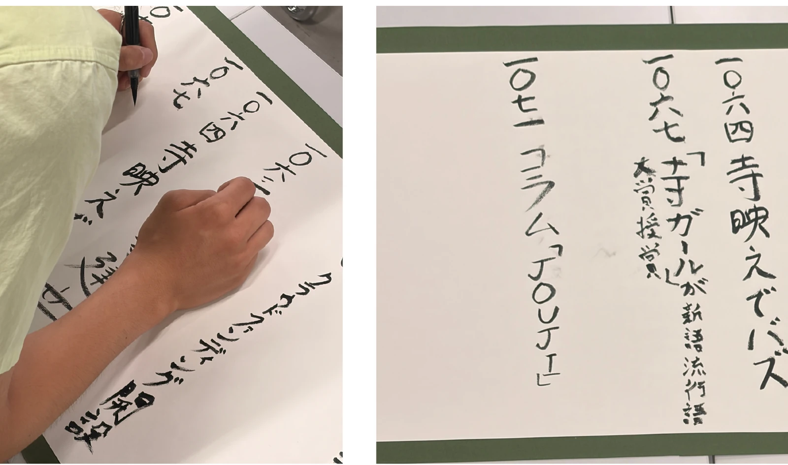
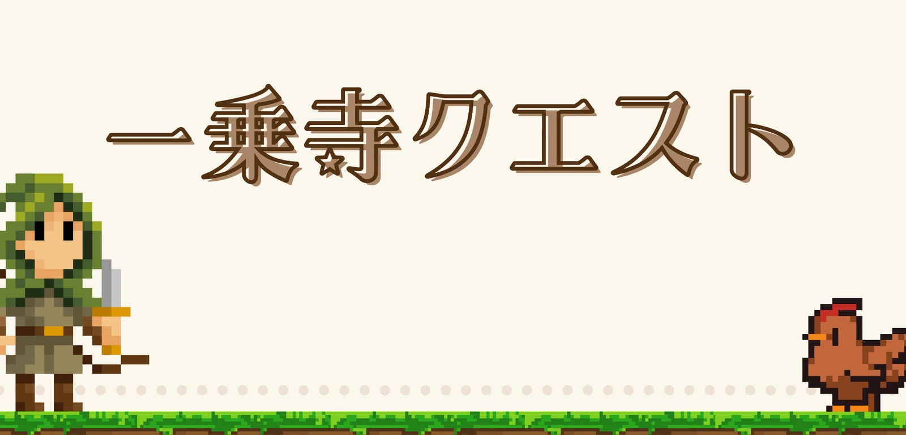
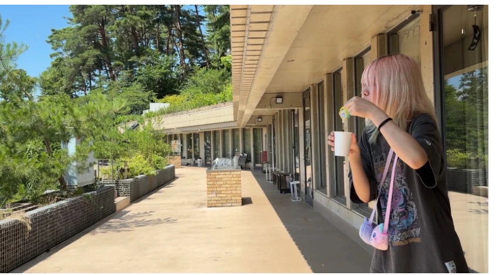

一乗寺の歴史絵巻物作り
みんなで一乗寺のオリジナルの歴史を描き、一つの絵巻物を作ります。これからの一乗寺の未来につながるような、新しい歴史を一緒に想像してみましょう。
学生と一緒に、一乗寺を発見しよう
一乗寺をテーマにした工作やゲームを、学生と一緒に楽しめる体験ブースです。

みんなで一乗寺のオリジナルの歴史を描き、一つの絵巻物を作ります。これからの一乗寺の未来につながるような、新しい歴史を一緒に想像してみましょう。

一乗寺公園を「一乗寺村」に見立て、スタッフに話しかけながらシールを集める冒険ゲームです。村人の中には、特別な情報を持っている人がいるかもしれません。

自分で作った魔法のステッキを使ってシャボン玉を飛ばし、一乗寺フェスの会場を彩ります。夕方の演奏や盆踊りも、みんなのシャボン玉で盛り上げましょう。